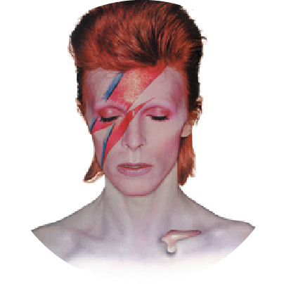

Aladdin Sane

Aladdin Sane is the sixth studio album by English musician David Bowie, released by RCA Records on 13 April 1973. The follow-up to his breakthrough The Rise and Fall of Ziggy Stardust and the Spiders from Mars, it was the first album he wrote and released from a position of stardom.
NME editors Roy Carr and Charles Shaar Murray called the album "oddly unsatisfying, considerably less than the sum of the parts", while Bowie encyclopedist Nicholas Pegg describes it as "one of the most urgent, compelling and essential" of his releases.The Rolling Stone review by Ben Gerson pronounced it "less manic than The Man Who Sold The World, and less intimate than Hunky Dory, with none of its attacks of self-doubt." The album cover featuring a lightning bolt across his face is regarded as one of Bowie's most iconic images.
In 2003, the album was ranked among six Bowie entries on Rolling Stone's list of the 500 greatest albums of all time (at #277), and 279 in a 2012 revised list. It was later ranked No. 77 on Pitchfork Media's list of the top 100 albums of the 1970s.
The name of the album is a pun on "A Lad Insane". An early variation was "Love Aladdin Vein", which David Bowie dropped partly because of its drug connotations.Although technically a new Bowie 'character', Aladdin Sane was essentially a development of Ziggy Stardust in his appearance and persona, as evidenced on the cover by Brian Duffy and in Bowie's live performances throughout 1973 that culminated in Ziggy's 'retirement' at the Hammersmith Odeon in July that year. Lacking the thematic flow found on its predecessor, Aladdin Sane was described by Bowie himself as simply "Ziggy goes to America"; most of the tracks were observations he composed on the road during his Ziggy Stardust Tour, which accounted for the place names following each song title on the original record labels. Biographer Christopher Sandford believed the album showed that Bowie "was simultaneously appalled and fixated by America".
His mixed feelings about the journey stemmed, in Bowie's words, from "wanting to be up on the stage performing my songs, but on the other hand not really wanting to be on those buses with all those strange people ... So Aladdin Sane was split down the middle." This kind of "schizophrenia", as Bowie described it, was conveyed on the cover by his makeup, where a lightning bolt represents the duality of mind, although he would later tell friends that the "lad insane" of the album's title track was inspired by his brother Terry, who had been diagnosed as a schizophrenic. Bowie himself came up with the idea of the lightning bolt over his face, but said the teardrop was Brian Duffy's idea: "He [Brian] put on that afterward, just popped it in there. I thought it was rather sweet." Regarded as one of the most iconic images of Bowie, it was called "the Mona Lisa of album covers" by Mick McCann writing for The Guardian.